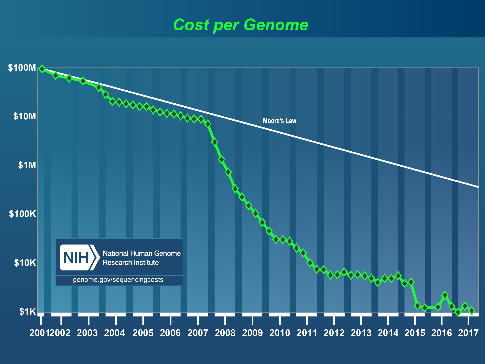

If you’re someone who eventually wants to have children, then when the time comes, it’s important to explore your options. One of these options is the idea of “designer babies.” Many have heard of “designer babies”, but what exactly that term constitutes can be unclear even to experts in embryology. Generally, “designer baby” refers to a baby that, prior to conception, has been genetically engineered in vitro (outside of the body) to have specific traits, which can vary from lowered disease-risk to gender selection [1],[2]. But where do designer babies come from? Where are they going? And most importantly, how can you have one?
Let’s start from the big picture. Assisted reproductive technologies (ARTs) are technologies used primarily for treating infertility. ARTs consist of techniques such as in vitro fertilization (IVF), a procedure where eggs and sperm are harvested and manually combined in a laboratory dish. The resulting embryos can be subjected to preferential selection, or even genetic modification, before being transferred to the uterus, where they continue to develop until birth [2],[3],[4]. This introduces an opportunity for parents to exert some control in determining what types of traits their children will possess, or—as some say—design their babies. Designer babies are most commonly produced through IVF.
IVF presents two different opportunities to select a baby’s traits: selective embryo screening and genetic modification [2]. Selective embryo screening is part of preimplantation genetic diagnosis (PGD)—a process during IVF by which the embryos grown in vitro are screened for genetic conditions prior to implantation to ensure that only deficit-free embryos are transferred into the uterus [4]. With PGD, prospective parents with heritable genetic conditions can prevent the passing of harmful traits to their biological children. They also have the opportunity to preferentially select male or female embryos for implantation, effectively customizing the sex of their child. The second way that traits can be selected in IVF is through genetically modifying the egg/sperm cells, or the embryo itself, using a tool called CRISPR-Cas9. The CRISPR-Cas9 system is derived from a naturally-occurring defense system in bacteria; its adoption as a gene-editing tool in 2013 has allowed researchers to edit genomes with higher accuracy and cost-efficiency than ever before [5],[6],[7]. Prior to the advent of IVF and the discovery of CRISPR-Cas9, designer babies were mostly a concept of science-fiction. Today, it’s estimated that over 8 million IVF babies have been born around the world [8].
Although embryo screening and genetic modification are both ways IVF can be used to select a baby’s traits, selecting which embryos should be transferred into the uterus is very different from changing the genetic information in embryonic cells. Genetic modification remains highly controversial; an ethical consensus regarding how much genome modification is acceptable, and what restrictions should be imposed, has yet to be reached. However, the current objectives of designer baby research are oriented towards disease prevention, rather than genetic enhancement (contrary to what is perhaps depicted in science-fiction) [1],[2].
The “slippery slope” debate surrounding genetic engineering is a prominent topic of discussion in the scientific community. It is the idea that permitting any kind of genetic modification in human embryos will inevitably lead to misuse of gene-editing technology for non-therapeutic reasons, which can have serious consequences on the human population [1],[9],[10]. The ethics of “designing” our offspring is an important area of discussion in medical and biological research.
Whether or not the government should intervene in this matter remains controversial. Some people argue that as long as the proposed genetic enhancements are safe, the government should not regulate how parents handle their children’s DNA, just as other mechanisms of enhancement, like hiring a tutor, are not regulated. Unlike tutors, however, genetic traits can be inherited; such modifications can be passed down and preserved in successive generations. This could potentially lead to more assortative mating, where people of like backgrounds and positions couple—and since it’s typically the rich who have access to advanced technologies, this could concentrate wealth and exacerbate socioeconomic inequality [2],[5],[13]. Does this mean gene-editing should only be permitted when it’s accessible to both the rich and the poor?
 Figure 1. Cost of Sequencing the Human Genome over Time (Source: NIH)
The costs of research in this field are expected to decline over time—the estimated cost to sequence a human genome in the year 2000 was ~$300 million USD [14], which is over 300 000 times more than what it costs today. However, ARTs are still not cheap. Currently, one complete IVF procedure costs between $7,750–$12,250 CAD ($250 for semen analysis, $2500–$7000 for medication, and $5000 for the actual IVF) [15], and coupled with PGD, it can cost a few thousand dollars extra. The fee is expensive and rarely, if ever, covered by a public health plan [5]. But then again, how does the cost of going through PGD compare to the cost of a lifetime’s worth of treatments for a child with a genetic condition?
Research pertaining to ARTs and designer babies is expected to progress. For example, scientists are currently working on finding new ways to acquire egg cells for IVF. Current methods for egg cell-acquisition require females to take ovulation-inducing drugs, which can overstimulate the ovaries, causing pain, abdominal swelling, and discomfort [16]. In 2012, Japanese scientists successfully transformed skin cells collected from mice into egg cells. In 2016, they used those same eggs to produce fertile pups, some of whom delivered their own healthy offspring [17]. The risks associated with taking fertility drugs may be avoided if different ways of recruiting egg cells become sustainable.
It can also be expected that the ethical issues surrounding designer babies will become more fleshed out as this research progresses. The Nuffield Council on Bioethics, an influential body that reports and examines ethical issues in biology and medicine, has placed concern upon the topic of human genome editing. In a 2016 inquiry entitled, Genome editing and human reproduction: social and ethical issues, which was launched in response to recent CRISPR-Cas9 advancements [18], the Council deemed gene-editing of human embryos to be morally permissible only if it “contributes to the welfare of the person born as a consequence and does not increase disadvantage, discrimination, or division in society” [19],[20]. The Council also launched a separate investigation into genome editing in livestock in 2018 [21]. Further public dialogue about gene-editing in human embryos can be expected in the future.
Though the ethics continues to lag behind the research, designer babies will continue to be debated and developed. You may not be able to customize your baby’s fingerprints just yet, but selecting such specific traits may become reality in the future. When it comes to having children, whether designer babies are the right option for you is something that should be considered carefully, as should all other possible options.